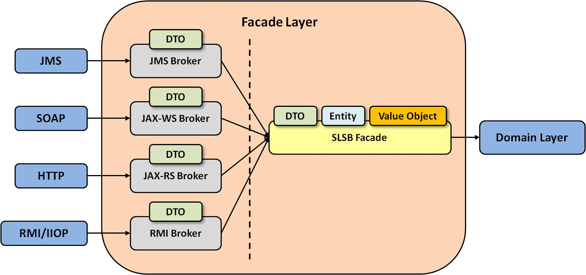

In traditional EJB 2.x architecture, session facades and data transfer objects (DTO) are well-known design patterns,
and they are always necessary for the non-trivial applications that includes RMI, due to certain EJB 2.x design
flaws.
MedRec does not use EJB 2.X, but it still uses a layer of facades and DTOs that sits in front the domain models and
handles the remote invocations, even though technically this layer is not required. MedRec could have been designed
so that entities and value objects act as DTOs and services act as facades. Further, with the help of remote EJB
interfaces, Web services annotations, and other such features of Java EE, the remote invocations could almost have
been made transparent, thus unifying the implementations of local services and remote services, and significantly
simplifying the development of distributed applications.
However, this design does not always work for all application, for the following reasons:
- The services are not coarse-grained enough for some remote invocation scenarios. If they were, MedRec would need
to perform several remote calls to the services to accomplish a workflow on the client side, which would
introduce a lot of overhead because the establishment of a remote call is a heavyweight task. In contrast, if
MedRec instead uses coarse-grained facades, in which several calls to the services are combined into a single
method, and then aggregates the return values, the remote client need only perform one remote call to accomplish
the entire job, saving resources.
- The entities and value objects are not suitable for remote invocations. In the MedRec architecture, entities and
value objects have complex relationships and even contain business logic, even though clients typically expect
simple structures that convey just the needed data. This means that if MedRec were to directly pass entities and
value objects to the clients, the following problems would ensue:
- Extra data fields, and sometimes even the referenced entities or value objects themselves, would be
transferred to the client; if the client does not use this data, the resources consumed by network
transmission and data marshalling/unmarshalling are wasted.
- Core business models would be directly exposed to clients, which means that the clients must be
tightly-coupled with internal MedRec implementations. This makes it difficult to do internal code
refactoring in later releases, because changes must be propagated to the clients.
- Client development is made more difficult and confusing due to the complexity of the entities and value
objects, much of which the client programmers not need to even know about. The confusion might even lead
to security risks. Good SOA programming practices say that service contracts, and passed objects are
certainly part of the contracts, should be as simple and explicit as possible to minimize
misinterpretation.
In sum, MedRec uses dedicated DTOs, which are simple objects that wrap only necessary data fields, thus
completely hiding its business models from clients and eliminating the complex object graphs, extra fields,
business operations, etc, and eliminating the preceding problems.
- The entities and value objects can not cover all the data models required by remote invocations. For example, as
mentioned previously, MedRec facades might need to aggregate the return values of several service methods into
one single return value, which means that MedRec requires a new dedicated object to hold all these values.
Because this object is only required in remote invocations, and it's a pure technical object and not a business
object, it should not be an actual entities or value objects, but rather, it is a DTO in the facade layer.
- If the services were to support direct remote invocations, they would require much more logic and code, such as
conversions between DTOs and entities or value objects, additional coarse-grained methods, initializing
lazy-loaded fields of JPA entities, and so on. This additional logic would be mostly related only to remote
invocations and not to local invocations, watering down the original service logic. This makes the need for
facades more apparent.
- It is typically difficult to directly support certain transport protocols in the services because Java EE does
not unify the transport bindings in the same way that SCA or JBI does. For example, MedRec has to create
additional JAX-WS POJOs, which call into our services and expose them as Web services, because WebLogic Server
recommends that programmers should not implement Web services directly with session beans. As another example,
MedRec cannot transparently have a service method become a JMS message consumer using standard Java EE; rather,
it has to create a MDB (Message-Driven Bean) facade to handle the JMS internals and then call into the service
method.
- The MedRec services do not work well with the contract-first approach. The contract-first approach is considered
an SOA best practice; it specifies that when creating an application, one should create the service contracts
like WSDL first and then automatically generate the language-specific service implementation skeletons. It is
not reasonable for MedRec services to be generated this way.
In summary, local objects and remote objects have fundamental differences, and each has its own design
considerations, especially in the case of a highly-decoupled distributed environment like the Internet, where
network latency is high, and the clients are typically heterogeneous and out of the control of the server
application. For such cases, it is typical to address the remote invocation and regular in-process issues
separately, so that both issues can be addressed in the optimal way. For this reason, MedRec does not make any
assumptions about the remote clients and their runtime environment by using a facade layer, or more appropriately a
remote facade layer, that is dedicated exclusively to remote invocations.
The downside is that the use of facades and DTOs can significantly complicate the application, and the conversions
between the DTOs and entities or value objects can be tedious, assuming there is no sophisticated solution that can
automatically do all the conversions. For this reason, MedRec does some mixing and matching to simplify the
implementation: it uses dedicated DTOs for some scenarios, but also directly passes some simple entities or value
objects to remote clients when appropriate.
Although as previously mentioned, direct support for multiple transport protocols for remote objects is difficult,
MedRec is required to support JMS transport and might later need to plug new remote invocation mechanisms into the
facade layer seamlessly. MedRec's facades are local stateless session beans that handle the DTO conversions and
delegate the actual processing to the services. These SLSB-implemented facades, however, do not provide remote
invocation support at all, but just define the coarse-grained operations target to the remote object. The support
for remote invocation mechanisms like RMI, JAX-WS, JAX-RS, JMS and so on is in a set of facade brokers that contain
the code for a particular remote invocation mechanism and then dispatch the invocations to the facades themselves.
MedRec defines the following facade brokers:
- JAX-RS facade brokers: Resources are manipulated using a fixed set of four create, read,
update, delete operations: PUT, GET, POST, and DELETE. PUT creates a new resource, which can be then deleted by
using DELETE. GET retrieves the current state of a resource in some representation. POST transfers a new state
onto a resource.
- JAX-WS facade brokers: Standard JAX-WS POJOs that reside in a dedicated Web application
generated by the WebLogic Web Service's jwsc Ant task.
- JMS facade brokers: Message-driven beans (MDBs) that are completely based on the message
listener support provided by the common components and receive the incoming JMS messages and possibly send out
reply messages. Unlike in some other EJB applications, MDBs in MedRec are not equal to the session beans, but
instead, they are responsible only for handling the JMS transport and dispatching all the actual invocations to
the more reusable stateless session bean facades.
- RMI facade brokers: These brokers are not actually required because the stateless session bean
facades can directly support RMI with the defined remote interfaces. MedRec defines these brokers only to be
consistent with the other types of facade brokers. The remote interfaces of the RMI facade brokers and the local
interfaces of the facades are exactly the same, which means that in the implementation, the remote interfaces
inherit from the local interfaces.
Note: See Delegate Services for the
reasons why MedRec uses both JAX-RS and JAX-WS for its Web services.
The following diagram describes the facade layer.

The transaction attribute of all the stateless session beans in the facade layer is "Supports". MedRec
explicitly demarcates transaction in the services (either "Required" or "NotSupported"), so the
facade layer uses the "Supports" demarcation to give the remote clients the flexibility of demarcating
distributed transaction (only possible for RMI ) and to make sure that no unnecessary transactions are started. The
only exception is the JMS facade broker, which uses either "Required" or "NotSupported". For
those MDBs that need to coordinate JMS transactions and JDBC transactions, MedRec specifies "Required";
otherwise, MedRec uses "NotSupported".
Because the facade layer resides in the boundary of the application and is the entry point for remote clients , it is
a natural point to include input validation and exception logging. In MedRec, the EJB interceptors of transparent
exception logging and method parameter validation from the common components are attached to all the stateless
session bean facades, so that:
- Any null value for a non-nullable parameter is automatically blocked and an exception thrown to the clients or
WebLogic Server container.
- Any exceptions thrown by the domain models in the invocation chain or the facades themselves are first caught
and logged in the application-specific log files before they're thrown to the clients or container, regardless
of whether the container records them anywhere.
Additional Resources
Copyright © 1996, 2019, Oracle and/or its affiliates. All rights
reserved.